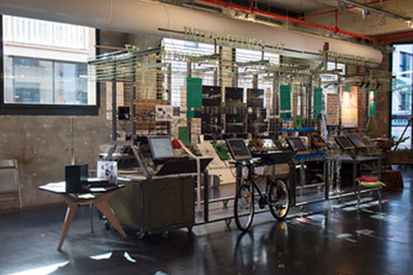

Exposiciónes anteriores

Features
Customizable theme
The theme can be customized just by changing few variables in _config.yml file.
Inline CSS
Since the style used in this theme is very less, I’m inlining it. This will save a request and hence speeds up website loading.
Light-weight
Since the theme is based on default Jekyll theme, it is very light-weight. No JavaScript except analytics is used!
Prose editing ready
You can edit or add blog posts easily using Prose.
Pre-installed Disqus comments
Disqus is already installed. All you have to do is to sign up with Disqus, get the disqus-shortname and update it in the _config.yml file.
An example page loads completely in 1.1s!
In a comparision, it loads faster than an amp page made using Jekyll - amplify.
Amplify page loading speed
Thunder page loading speed
Though the contents of the page are different, they are comparable because both pages have one image and thunder example has code, blockquote, table ordered list, unordered list and all headers. That I think is a fair comparision.
Installation
Fork the master branch and delete gh-pages branch in it. This is important because gh-pages branch is used here only to host the blog. You should be using the master branch as the source and create a fresh gh-pages branch.
How to delete old gh-pages branch?
After forking the repository, click on branches.

Delete gh-pages branch.
You have to create a new gh-pages branch using the master branch. Go back to the forked repository and create gh-pages branch.

Now, go to settings and check the Github Pages section. You should see a URL where the blog is hosted.
This process will host the theme as a Project Page. You can also download the files for local development.
Default theme will look like this

This theme is responsive.

Customization
Theme
The theme provides a nice header that can be customized by changing colors in the _config.yml file.
#color scheme
color-1: '#E64C3C'
color-2: '#F0C419' 
Remember, while developing locally, every change you make in _config.yml is applied only if you restart jekyll serve process.
Font
The default font is Helvetica. Text shadow is used to give it a little deapth.
Logo
The webjeda thunder logo is an SVG file. This can be removed and text can be used as the logo. Make these changes in the header file. But I suggest to use an SVG or an image.
Development
Make changes to the master branch and create a pull request. Do not use gh-pages branch as it is used to host the theme.